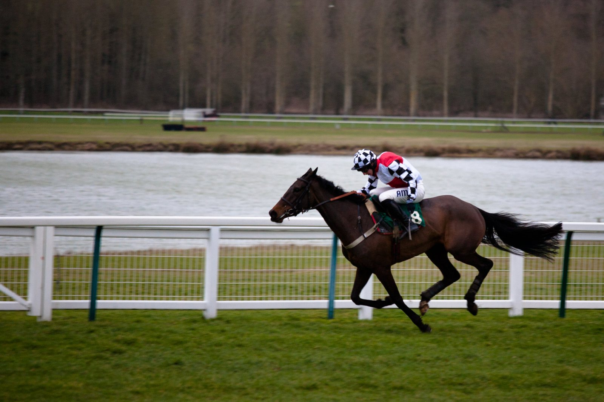

La BHA hace definitivas desde el 30 de noviembre las nuevas salidas de las carreras de obstáculos
La British Horseracing Authority (BHA) anunció el jueves que el nuevo procedimiento de salida de las carreras de obstáculos, a prueba desde el 5 de octubre, se aplicará de forma completa y permanente a partir del lunes 30 de noviembre.

El sistema tiene dos cambios principales. El primero es una «zona de salida» visible, marcada con unos nuevos postes situados hasta 40 yardas (unos 36 metros) por detrás de los que ya existían. El segundo afecta al reglamento: el ritmo máximo al que los caballos pueden acercarse a las cintas pasa de «al paso o a trote corto» a «al paso».
Durante la prueba hubo 12 salidas falsas en 650 carreras, un 1,85 %, y ninguna salida parada. Antes del cambio, la proporción rondaba el 3-4 %, aunque la BHA reconoce que los lotes cortos de estas semanas también han ayudado. En la fase de prueba no se sancionó a nadie: las infracciones se anotaban y se explicaban a los jockeys. Desde el 30 de noviembre sí habrá sanciones.
«Las reglas y los procedimientos se enfrentarán a su prueba más dura en las carreras con lotes más numerosos del resto de la temporada y en el Festival de marzo», admitió Cathy O'Meara, responsable de los oficiales de carreras de la BHA, que agradeció la colaboración de los jockeys.
La medida es una de las cinco recomendaciones de la revisión de las salidas hecha este año. Otra, ya aplicada en la reunión de noviembre, cambió el trazado de las dos salidas más problemáticas de Cheltenham, las de 2 millas y 2 millas y media. Siguen en estudio sanciones más duras en las carreras de Clase 1 y 2, con la idea de aplicarlas en el primer trimestre de 2027, y un sistema que grabe el audio de la salida y lo envíe en directo a los comisarios, previsto para antes del Festival de Cheltenham de 2027.
Por Martín Larrañeta